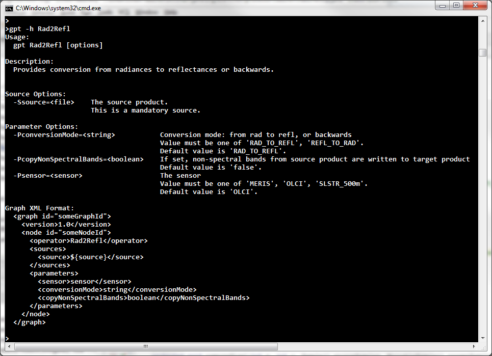

| Radiance-to-Reflectance Processor - Command Line Description |
|

The Radiance-to-Reflectance processor parameters can also be specified via a graph xml file. A possible graph xml file could look like the following. (Note that in principle it is not necessary to explicitly set parameters if default values shall be used).
<graph id="RadianceToReflectanceOlciTest">
<version>1.0</version>
<node id="rad2refl">
<operator>Rad2Refl</operator>
<sources>
<source>${olciProduct}</source>
</sources>
<parameters>
<sensor>OLCI</sensor>
</parameters>
<parameters>
<conversionMode>RAD_TO_REFL</conversionMode>
</parameters>
<parameters>
<copyNonSpectralBands>true</copyNonSpectralBands>
</parameters>
</node>
</graph>
This graph can be invoked by the following call on the command line:
gpt <graph-file.xml> -SolciProduct=<path-to-source-file>